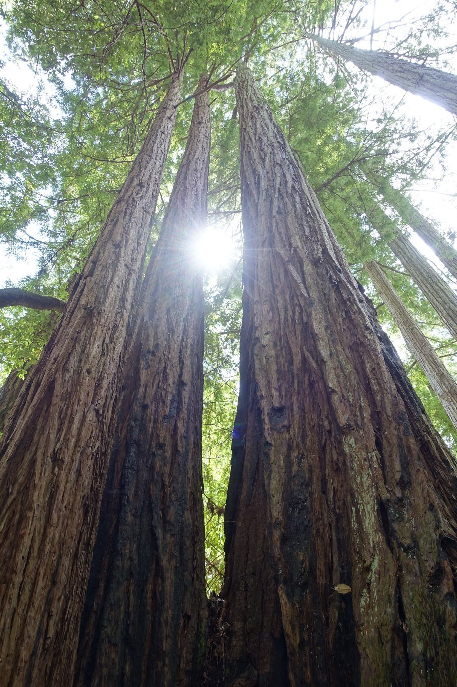
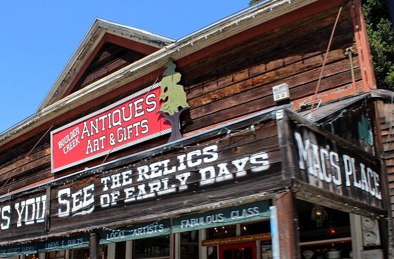
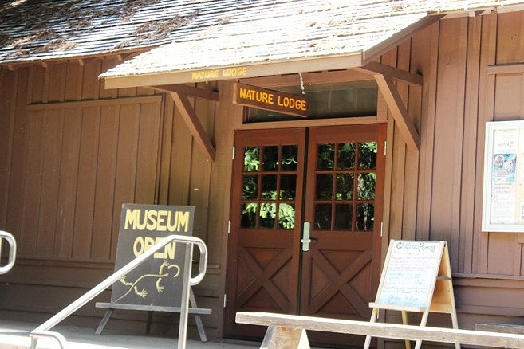

Top 3 activities to do in Boulder Creek

Big Basin
Established in 1902, Big Basin is California's oldest state park and is home to the largest span of old-growth Redwoods south of San Francisco.

Mac's 100 Year Old Place
Boulder Creek's glorious downtown destination in the grand old building is a relic to enjoy, every possible space filled with the artifacts of yesteryear for sale.

Big Basin Nature Museum
The new Nature Museum and Research Center will introduce visitors to the many endangered species in the park, allowing them to view this special place from the perspective of its inhabitants.